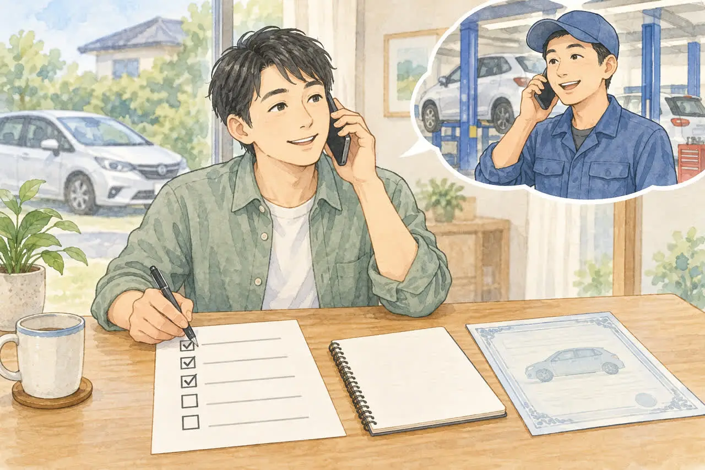
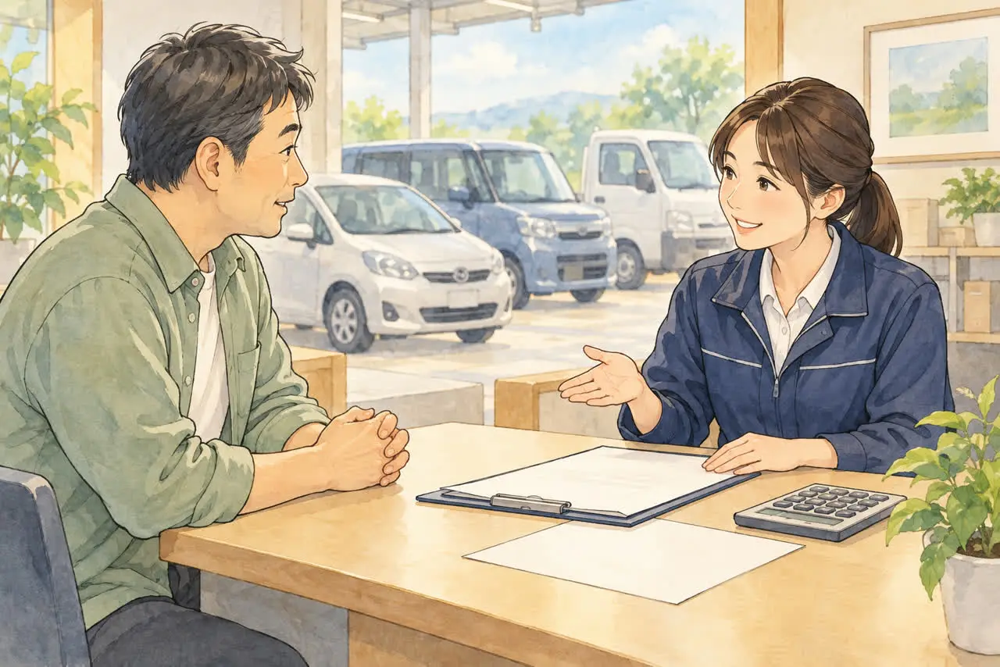

廃車のお金が気になる方へ
廃車の手数料・解体費用・レッカー代は？
かかるお金と、かからないお金を整理
公開
こんにちは、東京都足立区江北で自動車解体・廃車買取をしている「大崎商店 環七店」です。
「廃車にするには、いくらかかるの？」
「レッカー代や解体費用を、請求されたりしない？」
「手数料って、何に対して払うの？」
廃車のご相談の前に、いちばん気になるのは、お金のことだと思います。
この記事では、廃車にかかることがあるお金の種類と、依頼先に確認したいことを、整理します。後半では、足立区の大崎商店の場合も、はっきりご案内します。
※費用は、依頼先や車の状態、時期によって異なります。この記事では、行政・公的機関が案内している手数料と料金の目安を掲載しています。目安は全国一律の固定料金ではありません。
① 廃車にかかることがある「お金」の種類

廃車にかかることがあるお金は、大きく次の8つです。すべてが、必ずかかるわけではありません。
| お金の種類 | 内容 | 金額の決まり方 |
|---|---|---|
| ① 引き取り・レッカー代 | 動かない車や、遠い場所の車を運ぶ費用 | 依頼先による（距離や車の状態で変わる） |
| ② 解体費用 | 車を解体する費用 | 依頼先による |
| ③ 手続きの代行費用 | 運輸支局などでの手続きを、代わりに行う費用 | 依頼先による |
| ④ 登録・返納の手数料 | 国や軽自動車検査協会に納める手数料 | 公式に決まっている（下記） |
| ⑤ 書類を取る費用 | 印鑑証明書、住民票などの取得費用 | 市区町村による |
| ⑥ リサイクル料金 | 車を適正に処理するための料金 | 車種・装備と預託の状況による（下記） |
| ⑦ ローンの残り | 廃車にしても、返済は続く | ローン契約による |
| ⑧ 税金・保険 | 自動車税、自賠責・任意保険など | 還付や返戻金になることも |
② 公式に金額が決まっているもの
普通車の登録手数料（令和8年4月改定後）
以下は、普通車（登録自動車）の手数料です。業者に依頼する場合の代行費用や書類の取得費用は含みません。
| 手続き | 手数料 |
|---|---|
| 永久抹消登録（解体した車） | 無料 |
| 一時抹消後の解体届 | 無料 |
| 一時抹消登録 | 窓口申請500円／OSS申請450円 |
一時抹消登録は、窓口申請では、自動車検査登録印紙を貼って納めます。手数料は、改定されることがあります。くわしくは、「一時抹消」と「永久抹消」の違いをやさしく解説｜廃車はどちらを選ぶ？の記事をご覧ください。
軽自動車の返納・解体手続きの手数料
軽自動車は、普通車と手続き名・手数料が異なります（2026年10月確認）。
| 手続き | 手数料 |
|---|---|
| 一時使用中止で自動車検査証返納証明書の交付を受ける場合 | 450円 |
| 解体返納 | 無料 |
詳しくは、軽自動車検査協会の一時使用中止・解体返納の案内をご確認ください。
書類を取る費用（足立区の例）
印鑑証明書は、足立区の窓口では1通300円、利用条件を満たすコンビニ交付では1通150円です（2026年10月確認）。足立区の手数料案内をご確認ください。普通車では必要になるのが基本ですが、軽自動車の通常の廃車では印鑑証明書は不要です。住民票などの手数料は、各市区町村や取得方法で異なります。くわしくは、廃車に必要な印鑑証明書は何通？いつまでのものが使える？の記事をご覧ください。
③ リサイクル料金は、「預託されているか」で変わります
リサイクル料金は、新車を買うときに、あらかじめ支払う（預託する）のが原則です。必要な料金がすでに全額預託されている車は、通常、廃車時に同じ料金を重ねて支払う必要はありません。後付けしたエアコン・エアバッグなど、未預託分がある場合は追加の負担が生じることがあります。
預託されていない車（購入時に負担していない車）は、車を引き渡すときに支払うことになります。
- 金額の目安：環境省の案内では、一般の車両で6,000円〜18,000円程度（メーカー・車種・装備で、1台ごとに異なります）
- 料金は、シュレッダーダスト・エアバッグ類・フロン類の処理料金と、情報管理料金・資金管理料金で構成されます。資金管理料金は新車購入時の預託290円、引取時の預託410円です（2026年10月確認）。公式の料金内訳で、その車の必要額を確認してください
- 預託の状況は、自動車リサイクルシステムの自動車ユーザー向けページや、車検証閲覧アプリで確認できます
古い車や、預託の状況がわからない場合は、依頼先に確認しましょう。
解体する車の場合、預託ずみのリサイクル料金は、リサイクル処理に使われるため、原則として戻りません。修理して再販売する車や、引き続き使う車は、中古車として売買する際に、預託ずみの相当額（資金管理料金を除く）を、車両代金とは別にやり取りするのが原則です。
④ 見積もりで確認したい、5つのこと

依頼先によって、費用の内訳や、含まれる範囲は、さまざまです。電話や見積もりで、次の5つを確認すると、最終的に支払う金額が、わかりやすくなります。
- 「引き取り料（レッカー代・出張費）」は、かかるか：距離や、車の状態で、変わるか
- 「解体費用」は、かかるか
- 「手続きの代行費用」は、かかるか：印紙代などの実費も、含むか
- リサイクル料金：預託ずみか、別に支払うのか
- お支払い・お受け取りの金額：買取の場合、最終的に、いくら受け取れるか（または、いくら支払うか）
「引き取り料は無料」と書いてあっても、ほかの項目で費用がかかる場合があります。「何が含まれているか」を、確認しましょう。
⑤ 費用だけでなく、「戻るお金」も確認しましょう
廃車には、費用がかかるだけでなく、戻ってくるお金もあります。
- 自動車税（普通車）：抹消登録の翌月から年度末までの分が月割りで減額され、納付済みなら還付の対象になります。未納の税金に充当される場合もあります
- 重量税の還付：適正に解体し、永久抹消登録・解体届出等の手続きと同時に還付申請することが必要です。制度上の車検残存期間が1か月以上あることなどが条件です
- 自賠責保険の返戻金：廃車だけでは自動解約されません。解約手続きが必要で、残存期間などの条件によって返戻金が変わります
くわしくは、廃車にするとお金は戻ってくる？自動車税・重量税・自賠責の還付金の記事をご覧ください。軽自動車は、軽自動車は自動車税の還付がない？普通車との違いと、損しない廃車のタイミングの記事をご覧ください。
ローンが残っている車は、廃車にしても、返済は続きます。くわしくは、ローンが残っている車は廃車できる？所有者がローン会社のときの進め方の記事をご覧ください。
よくある質問
Q. 廃車には、いくらかかりますか？
A. 依頼先、車の状態、場所、預託の状況によって、異なります。普通車の登録手数料は、永久抹消が無料、一時抹消が窓口500円です。軽自動車は、一時使用中止で返納証明書の交付を受ける場合450円、解体返納は無料です。そのほかは、依頼先に、内訳を確認してください。
Q. レッカー代は、必ずかかりますか？
A. 依頼先と、車の場所・状態によって異なります。無料で引き取る業者もあります。距離や条件を、事前に確認しましょう。
Q. 解体費用は、かかりますか？
A. 依頼先によって異なります。依頼するときに、解体費用が、別に請求されるかどうかを、確認してください。
Q. 手続きの代行を頼むと、手数料がかかりますか？
A. 依頼先によって異なります。印紙代などの実費を含むかどうかも、あわせて確認しましょう。
Q. リサイクル料金は、払わないといけませんか？
A. 必要な料金が全額預託ずみなら、通常は追加の支払いはありません。未預託分がある場合は、引き渡すときに負担します。自動車リサイクルシステムなどで、預託の状況を確認できます。
Q. 車検が切れていると、費用が高くなりますか？
A. 車検の有無だけで、費用が決まるわけではありません。ただ、車検が切れていると、重量税の還付を受けられません。車検切れの車は公道を走行できないため、ご自身で運転して持ち込まず、積載車などでの引き取り方法を依頼先に確認してください。
大崎商店の場合：かかるお金・かからないお金
ここからは、足立区の大崎商店の場合を、はっきりご案内します。

当店は、車の引き取り・買取に伴う手続きをお受けしています。書類手続きだけの代行依頼は受け付けていません。
当店でかからないお金
- 解体費用・廃車手続きの代行費用・印紙代は、お客様に別に請求しません
- 足立区内は、引き取り無料です
- 足立区外も、買取価格がつかない車は、環七店から車で片道約30分圏内は、引き取り無料です。圏外でも、買取価格がつく車は、所在地と車の状態によっては、無料で引き取りに伺います（事前にご案内します）
ご案内するお金
- 足立区外の30分圏外で、買取価格がつかない車：お店の予定に余裕があるときは、引き取りに伺っています。予定が混み合っているときは、お断りしたり、別の日をご提案したりすることがあります。対応の可否と費用は、事前にご案内します
- 買取・引き取りの金額：買取価格がつく車は、お支払いする金額を、事前にお伝えします。車種や状態によっては、引き取り当日に、その場で現金買取も可能です
- リサイクル料金が預託されていない車：リサイクル料金を、お客様に別に請求することはありません
- 還付金・返戻金：重量税の還付、自賠責の返戻金は、買取価格に含めて当店が手続きする方法と、ご自身で手続きして受け取る方法があります。買取価格に含めた分は当店が受け取る扱いとなり、同じ金額がお客様に別途支払われるわけではありません。受け取り方法と必要な委任・保険手続きは事前に確認します。くわしくは、廃車にするとお金は戻ってくる？自動車税・重量税・自賠責の還付金の記事をご覧ください
車のお持ち込みも、歓迎しています
車を、お客様ご自身で、お持ち込みいただくことも、歓迎しています。どこからでも、お持ち込みいただけます。（引き取りの費用は、かかりません）
- 車検が残っていて、自走できる車：環七店へお持ち込みください。社長がいる店のため、買取価格などのご相談も、しやすくなります
- 解体を前提とする車や、自走できない車：入谷店で受け入れます
- 電話で話がまとまっていれば、どちらの店舗でも受け入れできます。お持ち込みの日時は、事前に、お電話でご相談ください
お客様ご自身で用意いただくもの
- 必要書類の取得費用（印鑑証明書など）は、お客様にご負担いただきます。取得前に必要な書類・通数を確認してください。足立区の印鑑証明書は窓口300円、条件を満たすコンビニ交付150円です
お電話の際は、次の内容をお伝えください。車の状況を伺って、最終的なお支払い・お受け取りの金額を、事前にご案内します。
- 車検証（または自動車検査証記録事項）の内容
- 車種・車の状態・車が置いてある場所
- 「いつまでに終わらせたい」という、ご希望の期限
廃車の費用のことも、大崎商店にご相談ください
電話で相談する 03-3854-4141メールで相談する（フォーム）ご来店の前に、お電話ください。引き取りなどで外出していることもあり、お電話いただければ、即日対応できるかをご案内できます。
大崎商店 環七店
電話：03-3854-4141
〒123-0872
東京都足立区江北7丁目1−3
営業時間：月〜土 10:00〜18:00
休業日：日曜・祝日
環七沿い／舎人ライナー
西新井大師西駅
大崎商店 入谷店
電話：03-3899-2837
〒121-0836
東京都足立区入谷7丁目5−11
営業時間：月〜土 9:30〜17:30
休業日：日曜・祝日・第2土曜
引き取りやご相談のお電話は、環七店がスムーズです。お電話の際は、「廃車の費用について」とお伝えください。車検証（または自動車検査証記録事項）をお手元にご用意いただくと、ご案内がスムーズです。
※掲載のイラストはAIで作成したイメージです。実際の店舗・役所の窓口を撮影したものではありません。
参考：国土交通省・登録・検査手数料の令和8年4月改定額／環境省・知っておきたい自動車リサイクル法／自動車リサイクル促進センター・リサイクル料金の支払い・受け取りの流れ／足立区・印鑑登録証明書／国土交通省・抹消登録申請に必要な書類／北陸信越運輸局・永久抹消登録と解体届出／国税庁・重量税の廃車還付／東京都主税局・自動車税